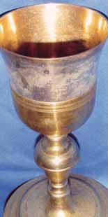
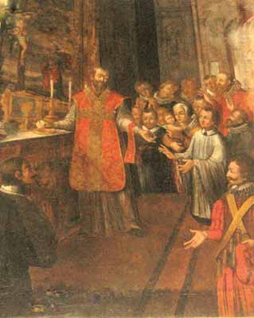
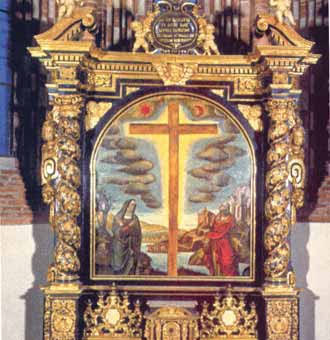
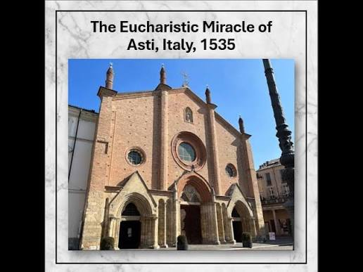

On July 25, 1535, a Eucharistic miracle occurred at the Collegiate Church of San Secondo in Asti, Italy, when Father Domenico Occelli saw a consecrated Host turn red with living blood during Mass.
This miraculous sign moved several soldiers in the congregation to convert to the Catholic faith. On November 6, 1535, Pope Paul III issued a Papal Brief authorizing a plenary indulgence for anyone who visits the Church of San Secondo on the anniversary of the miracle to pray for the intentions of the Pope.